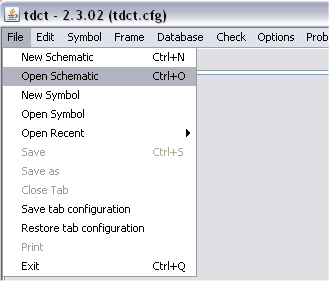

Tdct - a Configuration Tool for EPICS Runtime
Databases
Purpose
Configuring
EPICS
Runtime Databases with tdct
Hierarchy
Customizable Symbol Shapes
Functionality Summary
Help System
Conventions
used in the Help System
Development Road Map
Running Tdct
Running
Tdct
with Command
Line Switches
Differences between Tdct
and Capfast
NOTE: tdct requires java 1.7
Purpose
tdct was created as a replacement for the Capfast™ [1] tool, which was used by the
ISAC controls group
at TRIUMF from 1996-2009.
tdct provides a graphical way for designing EPICS IOC functionality by
instantiating EPICS records, assigning values to their properties
(=fields) and defining links between the records. Records
(including their links) are instantiated on a schematic and saved to a
schematics file.
tdct supports the creation of schematic hierarchies by allowing symbol
instances representing a schematic to be part of another schematic and
pass parameters via the symbol instance. This can be used to
form
an
"object-like"
superstructure above the flat, process-variable oriented EPICS runtime
databases.
Customizable Symbol Shapes
tdct allows the creation of symbols of fairly arbitrary shapes which helps making schematics functionality more obvious.
tdct
Functionality Summary
tdct contains the following functionality:
- a schematics viewer/editor with full hierarchy support for
configuring EPICS runtime databases
- a symbol viewer/editor for designing component symbols and
EPICS
record symbols
- a database builder, which translates schematics into EPICS
runtime database (.db) files, which can be loaded into an
IOC. tdct supports building of both fully resolved databases and
template databases (with unresolved macros which are resolved when the
database is loaded into an IOC) .
- an on-line viewer, which allows the schematics viewer to
display
real-time data from an EPICS IOC.
- a rudimentary VDCT >> tdct converter.
Interacting with tdct
Functionality of keyboard and mouse are listed in the reference section.
On-line help is started from menu Help >> tdct help.
Tdct provides two options of viewing on-line help which are configured
with the configuration file directive [helppath]
- using the Java Help System. The [helppath] must point to
the location
of the help distribution, usually a sub-directory
"help" below the tdct.jar.
Recently I encountered problems
generating the index and search functions for the Java Help system.
added the option of
- displaying help with a web browser. In this case [helppath]
must point either
- to a URL on a local web-server where the html files for
the tdct help are stored.
- or to the TRIUMF web-site at
http://isacwserv.triumf.ca/epics/tdct/help. Note
that the TRIUMF web-site will always contain help for the latest tdct
release.
The second option requires the environment variable TDCT_BROWSER to
provide the startup command for a web browser.
Commands or configuration file entries are printed in fixed width font,
e.g.
[option] dbdmode
Menu items are printed in Italics,
i.e. File
>> Open New
Schematics corresponds to

The following road-map for development was originally envisaged. Look
at the present release number and draw your own conclusions.
Release 1
- Full Capfast™
compatibility mode (within the usage scope of the
ISAC controls group and possible collaborators. See unsupported
features below):
- Schematic files should be compatible with Capfast™'s schematic editor
(schedit).
- Symbol files should be compatible with Capfast™'s symbol editor
(symed).
- Both Capfast™
and
Tdct should be usable on the same file sets.
- Generated EPICS databases should be verifiably identical
to
those generated by the schedit >> sch2edif
>> e2db tool
chain. This means that databases generated by the two tools from the
same schematic file may only differ in the record sequence within the
EPICS database and field sequence within records.
Release 2
- Maintain Capfast™
compatibility mode.
- Add frugal database mode ("dbd mode"):
- Include a full dbd file parser
- In this mode, do not use edb.def as
template for
database generation.
edb.def is still used for mapping of symbol files to record types.
- use default properties from dbd and override from symbol
file.
- add only fields to database which changed from the dbd
default.
- Add Channel Access functionality
Release 3 -
probably a pipe
dream
- merge symbol and schematic files into a new format
[1]
Phase
Three Logic, Beaverton, Ore., USA